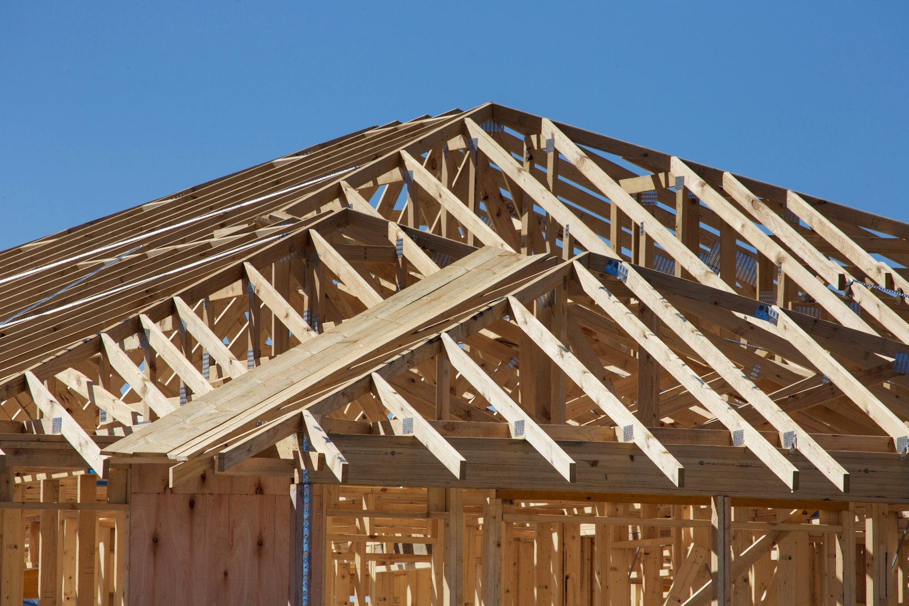

新築・注文住宅
土地探しのご相談から設計・施工まで。家族の暮らしに合わせた家づくりを進めます。
間取りの打ち合わせ、構造・断熱の方針、建材の選定まで、現場を知っている工務店として実務ベースでご提案します。予算の上限を共有いただければ、優先順位をつけて現実的なプランに落とします。
- 土地探し・敷地条件の整理
- 間取り・仕様のご提案
- 施工管理から引き渡しまで
← 在庫一覧 · A Sumi Editorial
家づくりとリフォームのメニュー
新築から小さな修繕まで、住まいと店舗の工事に対応します。メニューにない内容も、現場を見たうえで可否と進め方をお伝えします。
土地探しのご相談から設計・施工まで。家族の暮らしに合わせた家づくりを進めます。
間取りの打ち合わせ、構造・断熱の方針、建材の選定まで、現場を知っている工務店として実務ベースでご提案します。予算の上限を共有いただければ、優先順位をつけて現実的なプランに落とします。

水まわり・内装・間取り変更まで。いまの家を、これからの暮らしに合わせて整えます。
キッチン・浴室などの部分改修から、スケルトンに近い大規模改修まで対応します。暮らしながらの工事か、仮住まいが必要かなど、生活への影響も事前にお伝えします。

増築、外壁・屋根、雨漏りや小さな修繕まで。現場を見たうえで最適な進め方をご提案します。
雨漏り・外壁の傷み・屋根の劣化など、放置すると大きくなる不具合は早めの現地確認が安心です。増築やサンルーム、収納の追加など、暮らしの変化に合わせた改修もご相談ください。
相談から引き渡しまで、おおまかな流れです。
ご要望・予算・期限を伺います。お電話でもメールでも構いません。
必要に応じて現地を拝見し、制約や工事範囲を整理します。
工事内容と費用の目安、おおまかな工程をお伝えします。
内容に納得いただいたうえで契約し、工程に沿って施工します。
完工確認のうえお引き渡し。その後の相談にも対応します。
はい。水栓の交換や建具の調整など、小さな工事も受け付けています。内容によっては出張費のみのご案内になる場合もありますので、まずはお気軽にご相談ください。
大丈夫です。現地確認が必要な場合はその旨をお伝えしたうえで、費用の目安をご案内します。無理な営業はしません。
はい。新築・注文住宅、リフォーム・リノベーション、増改築・修繕まで幅広く対応しています。規模やご予算に合わせて進め方をご提案します。
部分改修は住みながらの工事が多いです。大規模な場合は仮住まいの要否も含めて、事前に工程と生活への影響をお伝えします。